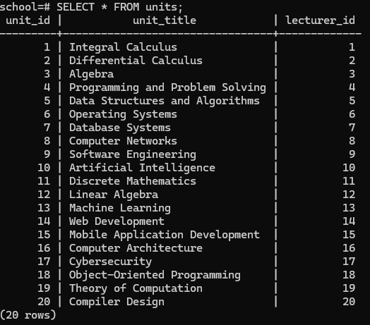
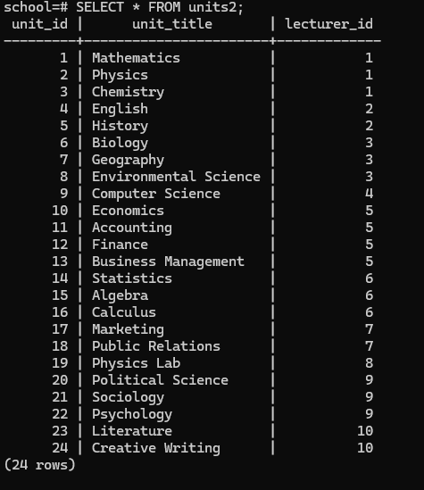

Relationships between tables define how data in one table is connected to data in another.
This is a fundamental aspect of relational databases, allowing you to manage related data across multiple tables in a structured and meaningful way.
There are three main types of relationships:
One-to-One (1:1): each record in one table is linked to one and only one record in another table.
One-to-Many (1:m): each record in one table is linked to zero, one, or many records in another table. For example one author can have many books.
Many-to-Many (m:m): each record in one table is linked to many records in another table, and vice versa. For example, many students can enroll for several courses and each course can be done by several students.
Foreign Keys
A foreign key is a column (or group of columns) in one table that references the primary key of another table.
Foreign keys are used to establish and enforce a relationship between the data in two tables, ensuring referential integrity.
Foreign key value in one table must match a primary key value in another, which prevents invalid data from being inserted.
Let's create a new table in our database called units, which will store information about the unit each lecturer teaches. This will be a one-to-one relationship, meaning each lecturer can teach only one unit, and each unit can be taught by only one lecturer.
Here is the table
CREATE TABLE units (
unit_id SERIAL PRIMARY KEY,
unit_title VARCHAR(100),
lecturer_id INTEGER UNIQUE,
FOREIGN KEY (lecturer_id) REFERENCES lecturers(id)
);
The units table stores information about the academic units taught by lecturers.
Each unit has a unique identifier (unit_id), a title (unit_title), and is associated with a specific lecturer (lecturer_id).
The relationship between units and lecturers is one-to-one, ensuring that each lecturer can only teach one unit, and each unit is assigned to only one lecturer.
The lecturer_id field is a foreign key that references the id column in the lecturers table, and it is constrained to be unique to maintain the one-to-one relationship.
Let's insert the data into the units table:
INSERT INTO units (unit_title, lecturer_id)
VALUES ('Integral Calculus', 1);
INSERT INTO units (unit_title, lecturer_id)
VALUES ('Differential Calculus', 2);
INSERT INTO units (unit_title, lecturer_id)
VALUES ('Algebra', 3);
INSERT INTO units (unit_title, lecturer_id)
VALUES ('Programming and Problem Solving', 4);
INSERT INTO units (unit_title, lecturer_id)
VALUES ('Data Structures and Algorithms', 5);
INSERT INTO units (unit_title, lecturer_id)
VALUES ('Operating Systems', 6);
INSERT INTO units (unit_title, lecturer_id)
VALUES ('Database Systems', 7);
INSERT INTO units (unit_title, lecturer_id)
VALUES ('Computer Networks', 8);
INSERT INTO units (unit_title, lecturer_id)
VALUES ('Software Engineering', 9);
INSERT INTO units (unit_title, lecturer_id)
VALUES ('Artificial Intelligence', 10);
INSERT INTO units (unit_title, lecturer_id)
VALUES ('Discrete Mathematics', 11);
INSERT INTO units (unit_title, lecturer_id)
VALUES ('Linear Algebra', 12);
INSERT INTO units (unit_title, lecturer_id)
VALUES ('Machine Learning', 13);
INSERT INTO units (unit_title, lecturer_id)
VALUES ('Web Development', 14);
INSERT INTO units (unit_title, lecturer_id)
VALUES ('Mobile Application Development', 15);
INSERT INTO units (unit_title, lecturer_id)
VALUES ('Computer Architecture', 16);
INSERT INTO units (unit_title, lecturer_id)
VALUES ('Cybersecurity', 17);
INSERT INTO units (unit_title, lecturer_id)
VALUES ('Object-Oriented Programming', 18);
INSERT INTO units (unit_title, lecturer_id)
VALUES ('Theory of Computation', 19);
INSERT INTO units (unit_title, lecturer_id)
VALUES ('Compiler Design', 20);

What our units table would have looked like for 1-to-many relationship
If we wanted to implement a one-to-many relationship between our lecturers and units table, ie one Lecturer can teach several units, we would:
Remove the UNIQUE constraint on the lecturer_id field in the units table. This allows multiple courses (units) to be associated with the same lecturer.
Keep the lecturer_id as a foreign key pointing to the lecturers table, but allow for multiple rows in the units table to reference the same lecturer_id.
-- Lecturer 1 teaches 3 units
INSERT INTO units2 (unit_title, lecturer_id) VALUES ('Mathematics', 1);
INSERT INTO units2 (unit_title, lecturer_id) VALUES ('Physics', 1);
INSERT INTO units2 (unit_title, lecturer_id) VALUES ('Chemistry', 1);
-- Lecturer 2 teaches 2 units
INSERT INTO units2 (unit_title, lecturer_id) VALUES ('English', 2);
INSERT INTO units2 (unit_title, lecturer_id) VALUES ('History', 2);
-- Lecturer 3 teaches 3 units
INSERT INTO units2 (unit_title, lecturer_id) VALUES ('Biology', 3);
INSERT INTO units2 (unit_title, lecturer_id) VALUES ('Geography', 3);
INSERT INTO units2 (unit_title, lecturer_id) VALUES ('Environmental Science', 3);
-- Lecturer 4 teaches 1 unit
INSERT INTO units2 (unit_title, lecturer_id) VALUES ('Computer Science', 4);
-- Lecturer 5 teaches 4 units
INSERT INTO units2 (unit_title, lecturer_id) VALUES ('Economics', 5);
INSERT INTO units2 (unit_title, lecturer_id) VALUES ('Accounting', 5);
INSERT INTO units2 (unit_title, lecturer_id) VALUES ('Finance', 5);
INSERT INTO units2 (unit_title, lecturer_id) VALUES ('Business Management', 5);
-- Lecturer 6 teaches 3 units
INSERT INTO units2 (unit_title, lecturer_id) VALUES ('Statistics', 6);
INSERT INTO units2 (unit_title, lecturer_id) VALUES ('Algebra', 6);
INSERT INTO units2 (unit_title, lecturer_id) VALUES ('Calculus', 6);
-- Lecturer 7 teaches 2 units
INSERT INTO units2 (unit_title, lecturer_id) VALUES ('Marketing', 7);
INSERT INTO units2 (unit_title, lecturer_id) VALUES ('Public Relations', 7);
-- Lecturer 8 teaches 1 unit
INSERT INTO units2 (unit_title, lecturer_id) VALUES ('Physics Lab', 8);
-- Lecturer 9 teaches 3 units
INSERT INTO units2 (unit_title, lecturer_id) VALUES ('Political Science', 9);
INSERT INTO units2 (unit_title, lecturer_id) VALUES ('Sociology', 9);
INSERT INTO units2 (unit_title, lecturer_id) VALUES ('Psychology', 9);
-- Lecturer 10 teaches 2 units
INSERT INTO units2 (unit_title, lecturer_id) VALUES ('Literature', 10);
INSERT INTO units2 (unit_title, lecturer_id) VALUES ('Creative Writing', 10);

What we would do to implement many-to-many relationship
To establish a many-to-many relationship where several lecturers can teach the same unit(s), you'll need to introduce an additional table, often called a junction table or associative table.
This junction table will link the lecturers and units tables.
Here's how you can structure the tables:
units table: will store the units.
lecturers table: will store the lecturers.
lecturers_units table: is the junction table/associative table and will contain foreign keys referencing both the lecturers and units tables, allowing for multiple associations between them.